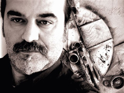

|

Alessandro Grazi è un curioso ricercatore. Svolge abitualmente la professione di grafico
pubblicitario. Un mestiere certo creativo ma, come dire, arginato dalla "rigidità" e dalla "regolarità"
della macchina informatica. Così il Grazi ha cercato una alternativa che potesse soddisfare il suo
innato desiderio di esprimersi liberamente. Ha trovato questa nella pittura. Discorrendo con lui si
capisce di essere di fronte ad un espressionista istintivo: "La pittura è emozione e il quadro è il
manifesto di ciò che si prova; mi piacciono i colori puri e i toni accesi: il celeste, l'azzurro, l'arancio, il
rosso e il bianco".
Osservando poi le fasi di crescita della sua arte ci accorgiamo che il Grazi è un eccentrico che prende
spunto dagli stimoli più vari. Alla sua prima mostra nel Chiostro di S.Cristoforo nel 1987 comparivano
quadri figurativi caratterizzati da un estremo grafismo.
Nel 1991 una nuova esposizione alla Galleria Continua di S.Gimignano presentava opere nelle quali
l'impianto figurativo era scomparso ma permaneva un evidente telaio disegnativo. Questa fase, che
lo stesso artista definiva significativamente "grafica cubica", segnava l'accostamento del Grazi alla
pittura informale. Toni vaporosamente variopinti introducevano, quasi attraevano, verso immagini
polimateriche. Ma una volta avvicinato, l'osservatore trovava nascoste fra le forme frasi con
considerazioni fortemente inquietanti sulla vita dell'uomo. Ecco altre stravaganti trovate, come la
serie di orologi e pitture entro borsette di plastica trasparenti illustranti ironicamente il tema del tempo
(tale serie fu intitolata "ticche" alludendo al suono della lancetta), dopo
Alessandro Grazi ha allontanato dalla sua arte ogni traccia grafica per dar vita ad una pittura fatta
solo di colore.
Nei dipinti della seconda metà degli anni 90 appaiono larghe campiture in forti, anzi violente, tonalità.
Il gusto di queste opere è decisamente astratto. Ma si tratta di un astrattismo parlante, che ha un
senso e una radice nella realtà. In fin dei conti ciò che il Grazi descrive, ossia trasfigura, sono gli
eventi e gli oggetti del quotidiano. Così fra i colori scopri elementi di una macchina in corsa, il disco
iridescente del sole o quello latteo della luna.
Grazi continua a fare progetti nuovi. Nasce la galleria Didee ed è davvero una idea originale.
Espongono, ancora oggi, giovani artisti da tutto il mondo senza alcuna richiesta in cambio, al di fuori
delle ragioni di mercato che dominano le gallerie in questo settore!
Ecco” Immaginativa” concorso internazionale per opere di piccolo formato alla quarta edizione.
E mostre che uniscono artisti, arte e tradizioni di prodotti tipici, montate in posti insoliti come fattorie,
chiese sconsacrate, cantine di aziende famose.
Alessandro oggi è ritornato al figurativo. Sempre molto personale. Anche i suoi personaggi “Gli
indicatori” denunciano i continui, i piccoli e i grandi soprusi giornalieri che subiamo e infliggiamo tutti
in maniera più o meno consapevole.
Poi nuove grandi opere “galleggianti” in un ninfeo secentesco nelle fiabesche colline del Chianti:
”bello come il sole” e “splendente come la luna”. Gioiose ma in contrapposizione, “riflettenti”
nell’acqua un travagliato stato d’animo.
Curiosi folletti ritagliati e dipinti nell’acciaio, coloratissimi, girevoli come banderuole, i “gangheretti”
esposti alle intemperie e a protezione del territorio nelle vigne sotto a Montalcino...
Ora Grazi dipinge cavalli... sempre in testa, sempre pronti alla lotta e si allena per dipingere il suo
Palio del Luglio 2007.
Così si può scoprire soprattutto che, senza vagare nei mercati più eletti del contemporaneo, anche a
casa trovi artisti che sviluppano ricerche parallele a quelle dei nomi più illustri della pittura, a volte con
risultati più nuovi e originali, in continuo mutare, molto piacevoli a guardare ma anche molto profondi
nel significato.
Marco Ciampolini

Piace ai contradaioli il “Cencio rock” di Alessandro Grazi, svelato tra gli applausi nel Cortile del Podestà di Palazzo Pubblico.
“Alessandro Grazi, artista e grafico senese, ci offre qualcosa di diverso, originale - afferma il sindaco di Siena Maurizio Cenni - ma al tempo stesso così rispettoso della tradizione da risolvere questa apparente contraddizione con un dipinto denso, di forte impatto, che della grafica e della pittura riesce a fare una sintesi completa ed imprevedibile, ed apre la lunga estate della città con un'opera che punta non solo sull'impatto emotivo, ma anche sulla capacità di stupire, trovando soluzioni originali”.
È un drappellone double face in cui domina il rosso, “un'opera che esplode di colori, sostanza e sangue - dice nella sua presentazione Massimo Biliorsi - Un Palio che guarda al futuro, eppure familiare, con una ispirata cura di disporre i simboli”.
Tra gli elementi più originali, il suono della festa e della senesità rielaborato dal musicista Giulio Stracciati e inserito in un cd all'interno di una tasca segreta sul retro del Drappellone, e le teste dei barberi che sul davanti “sfondano” la regolarità del pezzo di stoffa per proiettarsi all'esterno, richiamando il concetto di libertà, mentre sul retro la seta non è bianca, ma carica di pennellate che raffigurano una testa di cavallo con una spennacchiera bianca.
L'artista la dipingerà dopo la Carriera con i colori della Contrada vittoriosa. I tratti più innovativi convivono nel Cencio con la tradizione dell'iconografia paliesca.
La Madonna di Provenzano nella parte alta, proposta con un “impianto” classico, anche se con particolari che riconducono alla tecnica grafica, gioca sulla prospettiva: da vicino, infatti, i caratteri somatici del volto richiamano le origini delle etnie arabe. Facilmente riconoscibile anche la Chiesa, seppur stilizzata, dove l'immagine sacra è conservata, così come le due figure in basso a concretizzare il concetto e l'importanza del volontariato al quale il Drappellone è dedicato.
Di forte effetto la frase in corsivo scritta da Alessandro Grazi sulla seta: “la mia volontà per la tua salvezza”.

retro del drappellone


|